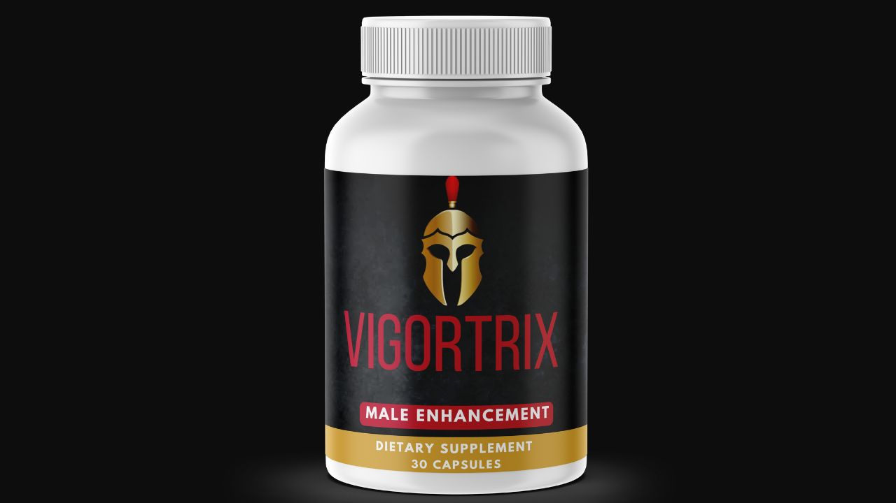

Health Reviews Labs investigated Vigortrix's approach to male hormone optimization — and why inhibiting testosterone-to-estrogen conversion is the missing dimension in most testosterone supplements.

Aromatase Inhibition + T-Support + Circulation · GMP-Certified · 60-Day Guarantee
→ Click Here for Official SiteAromatase is an enzyme found primarily in adipose (fat) tissue, but also in muscles, liver, and brain, that converts testosterone to estradiol via a process called aromatization. As men age and accumulate more adipose tissue, aromatase activity increases — accelerating the conversion rate. A man who increases testosterone production by 20% but simultaneously increases conversion by 25% is net negative on available testosterone. Most testosterone supplements focus entirely on the production side. Vigortrix adds Chrysin specifically to address the conversion side.
Chrysin is a bioflavonoid from passion flower (Passiflora caerulea) with documented aromatase-inhibiting activity. It reduces the enzymatic conversion of testosterone to estradiol, protecting the testosterone produced by the other formula components. This "protect what you produce" approach is what differentiates Vigortrix from formulas that boost production without addressing conversion.
Tribulus Terrestris stimulates LH release from the pituitary, signaling Leydig cells in the testes to produce testosterone. Tongkat Ali reduces SHBG — the binding protein that renders testosterone inactive — increasing the free fraction available for receptor binding. Saw Palmetto manages DHT conversion and supports prostate health. Magnesium is an essential cofactor for testosterone receptor binding and signaling.
Hawthorn Berry's polyphenols protect eNOS from oxidative inactivation — maintaining the enzyme that produces nitric oxide for vasodilation. L-Citrulline converts to L-Arginine in the kidneys, providing sustained NO substrate. Epimedium icariin inhibits PDE5 — the enzyme that degrades cyclic GMP — maintaining the smooth muscle relaxation signal relevant to erectile function.
Provides ketosterones and antioxidant compounds with connective tissue support relevant for men who combine Vigortrix with physical training. Also contributes anti-inflammatory activity that supports the vascular health dimensions of the formula.
Vigortrix's Chrysin aromatase inhibition is the meaningful differentiator — addressing the testosterone-to-estrogen conversion that most men's health supplements ignore entirely. Combined with Tribulus and Tongkat Ali for production support, Hawthorn + L-Citrulline for endothelial circulation, and Epimedium icariin for PDE5 inhibition, the formula covers the most important dimensions of male hormone optimization. Stimulant-free, GMP-certified US facility, 60-day guarantee. Consult your physician if you have hormone-sensitive conditions.
Chrysin Aromatase Inhibition · T-Support · Circulation · 60-Day Guarantee
→ Click Here for Official Site